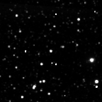

Comet Hunt
Explore
Comets
Guide
OO
Explore
/
RA 77.0 Dec +30.4
Example dot on real SPHEREx photos
Side by side
Blink
Remove still stars
Known objects
Invert
Earlier
8 Sep, 03:10
Later photo minus earlier photo. Still stars cancel out.

RW Aurigae
2 arcmin
Later
8 Sep, 14:52
RW Aurigae
8 Sep 03:10
8 Sep 14:52
5 Mar 02:28
5 Mar 14:10
11 Sep 01:46
11 Sep 13:28
 RW Aurigae
RW Aurigae
RW Aurigae
RW Aurigae
 5 Mar 14:10
5 Mar 14:10